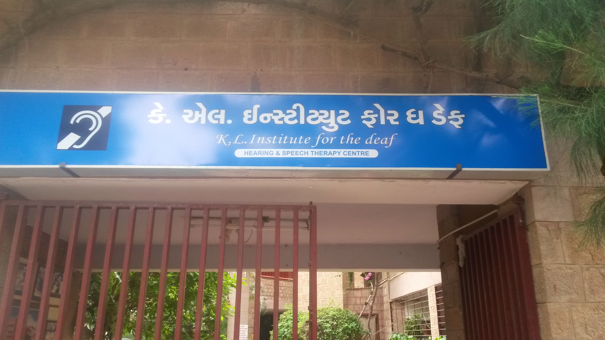

Pilot program to provide 30 deaf students at the KL Institute for the Deaf in India with low cost text-communication devices to help them communicate and express themselves better.
This is pilot program to evaluate the use of technology to improve the communication among deaf and dumb students and with their instructor. The funds will be used to upgrade the Wi-Fi and IT infrastructure at KL institute so that they can upgrade the Wi-Fi coverage in classrooms.
The 30 high school senior students and their instructor will be provided cellphone with texting capability. Usually these kids communicate via sign language and have to be in line of sight with other kids and teacher to communicate.
As we all know, just because deaf people may not be able to hear or speak doesn’t mean they have nothing to say!
In this 21st Century Deaf population is greatly impacted by the communication revolution. The invention of cell phones with text messaging is finally offering Deaf the freedom that the telephone provided hearing people. Deaf people are able to make new connections using instant messaging and it gives them ability to communicate not only with one another, but now they can chat directly with hearing people and express themselves just like everyone else. Now finally they have an opportunity
The concept of this pilot program is for the students to use texting to communicate with the whole class and participate in discussion and be able to express their opinion.